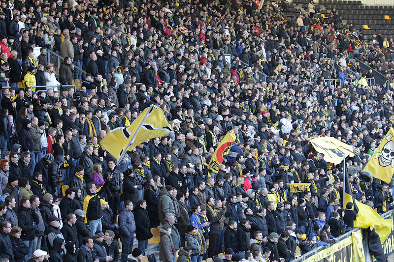
17.300 toeschouwers.
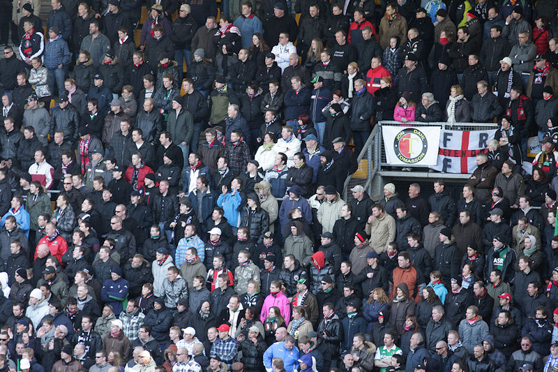
Het gastenvak was nagenoeg vol.
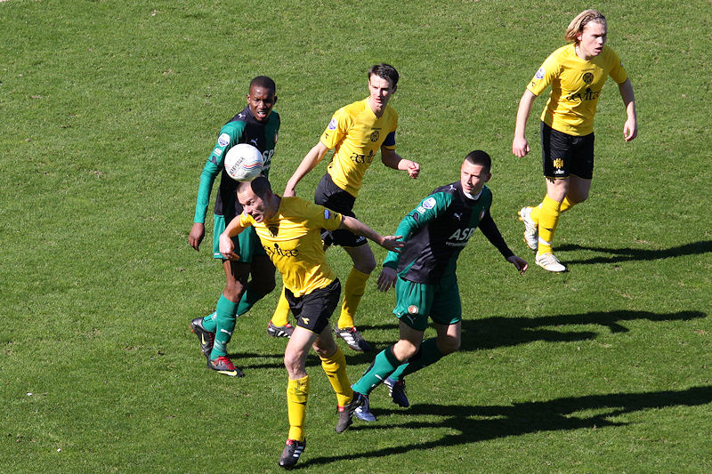
Ex-Rodaspeler Cissé speelde vandaag voor het eerst als diepste spits bij
Feyenoord.
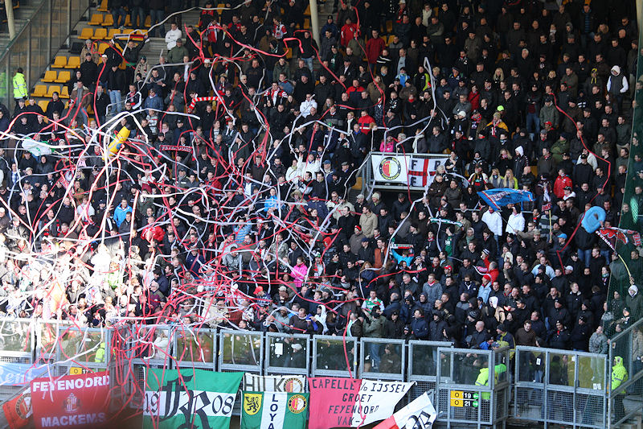
Kleine sfeeractie in het gastenvak in de 12e minuut.
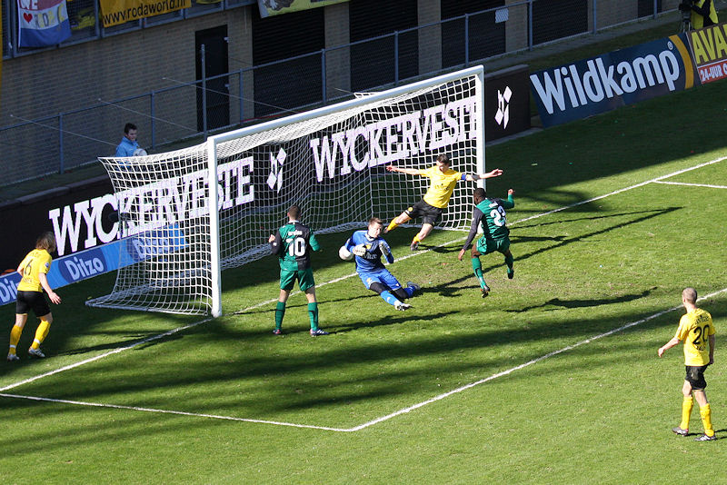
Cissé schiet van dichtbij voorbij Tyton: 0-1, (14').
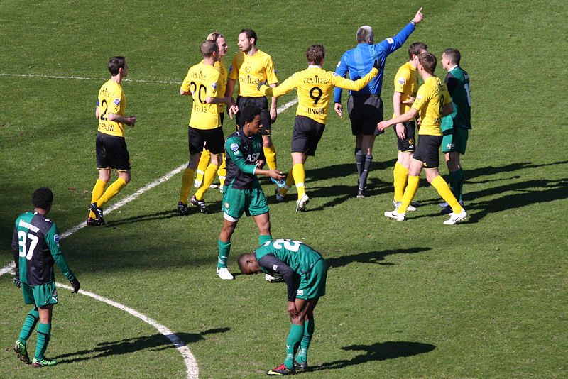
Even later krijgt Vormer een zwaar bestrafte rode kaart nadat hij de
doorgebroken Fer heeft aangetikt.
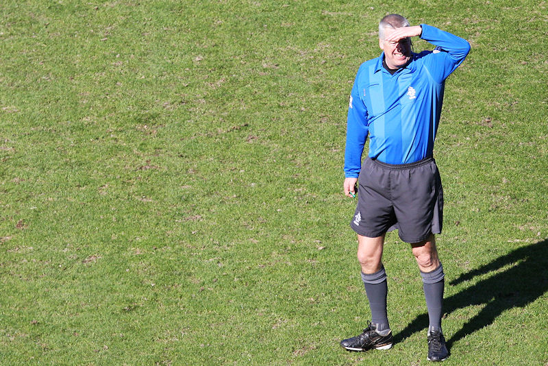
Luinge heeft nog het meeste last van de zon. Zijn beslissingen waren vaak
dubieus.
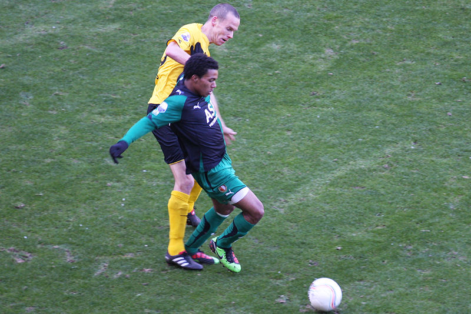
Saeijs, recentelijk negatief in de media over Roda, doet gewoon zijn plicht.
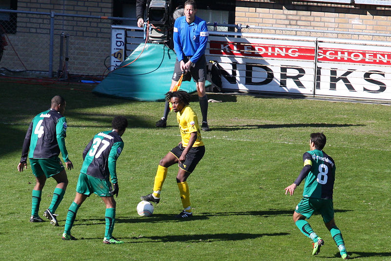
Matondo speelt per wedstrijd beter.
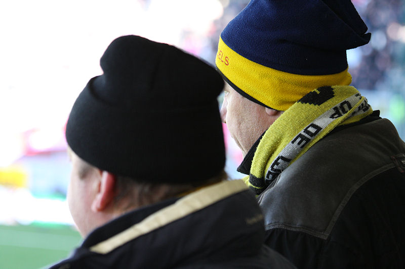
Behalve zonnig was het ontzettend koud...
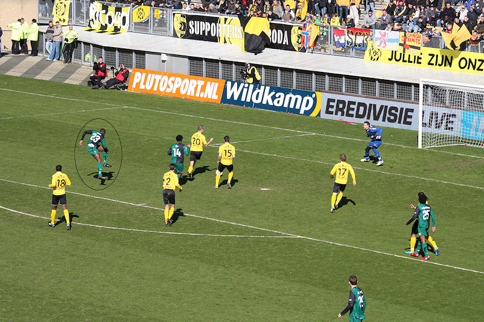
Schot Cissé.
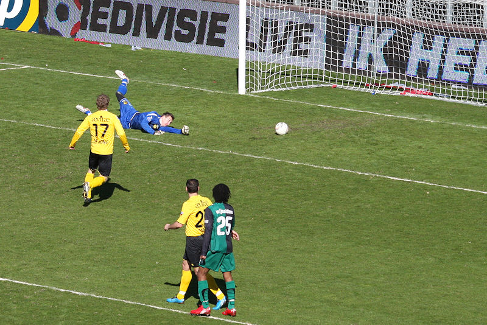
Treffer: 0-2, (60').
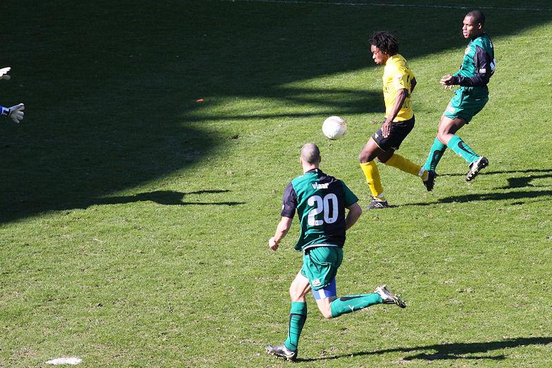
Even later scoort Matondo tegen: 1-2, (62').
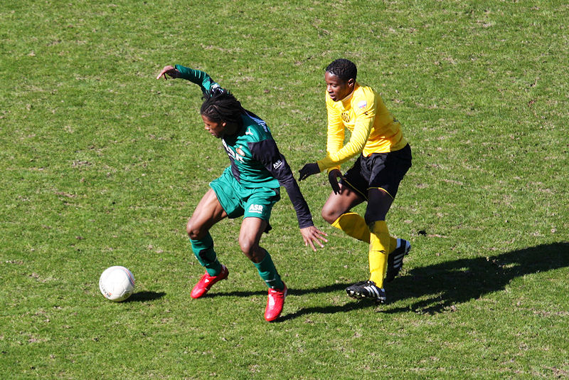
Sutchuin Djoum in actie. Hij werd al na een klein halfuur ingebracht voor
Junker.
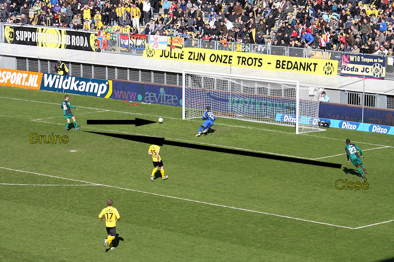
De hoop op een gelijkmaker vervliegt als Bruins op aangeven van Cissé
scoort: 1-3, (72').
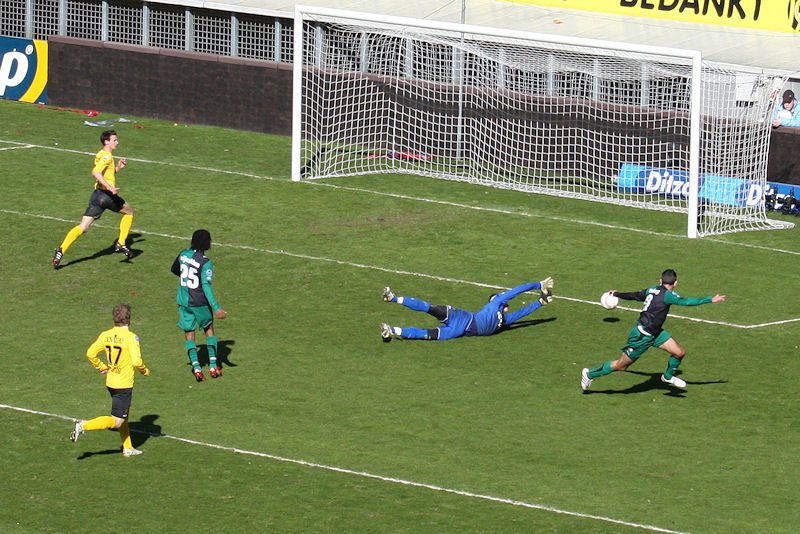
De voor Cissé ingevallen Makaay scoort 1-4, (82').
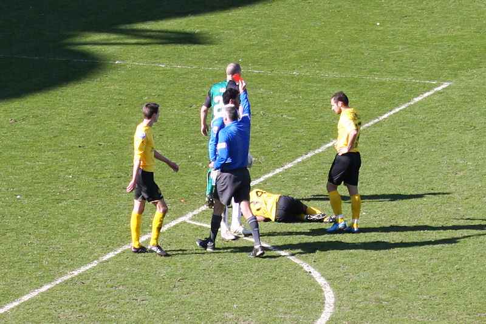
Keeper Darley krijgt de rode kaart na een wilde charge op Matondo.
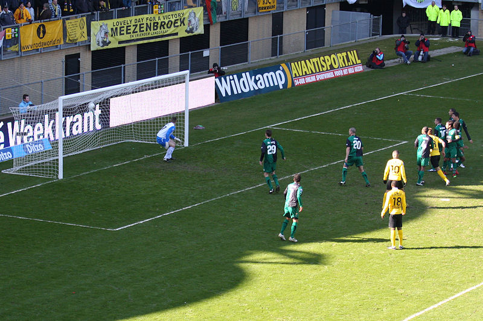
De toegekende vrije trap wordt door Bodor perfect in de kruising geschoten:
2-4, (85').
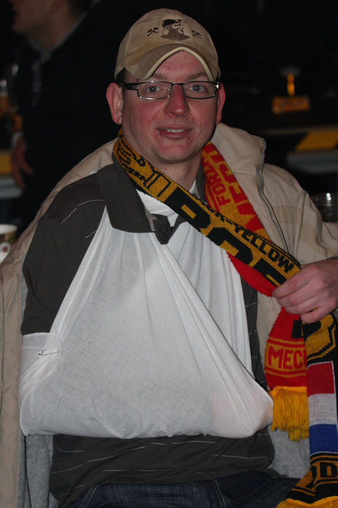
Mark S. revalideert van een sleutelbeenbreuk.
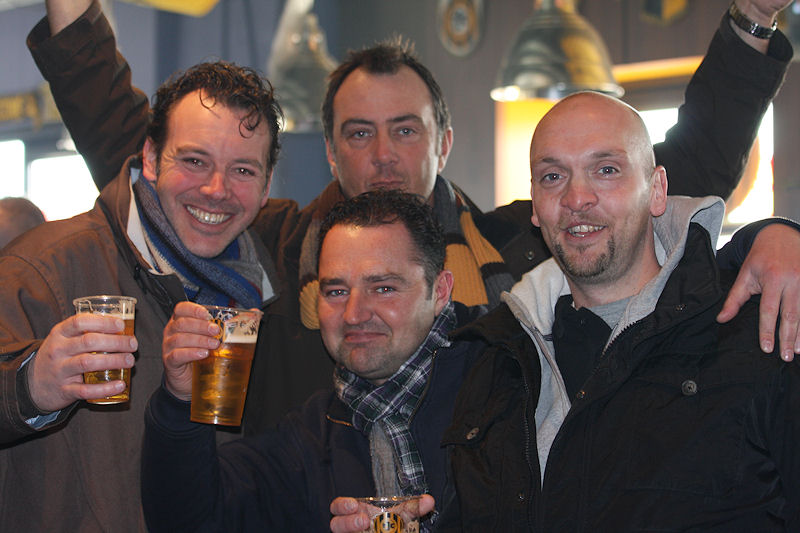
Een van deze vier heren is een neef van Huub Smeets.
Van de vijf spelers die op het lijstje stonden kwam alleen Janssen.
Foto's van Feyenoord-zijde:
http://www.ego2.nl/0910Ego2FotoRJCFey.htm